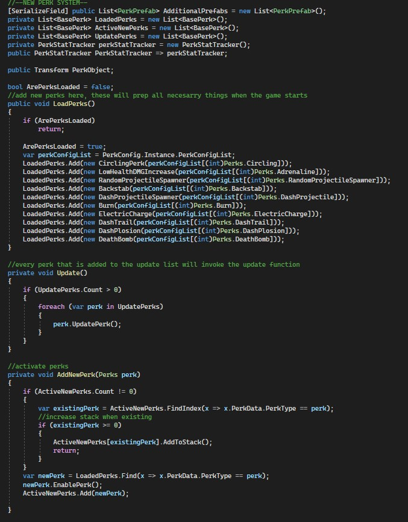
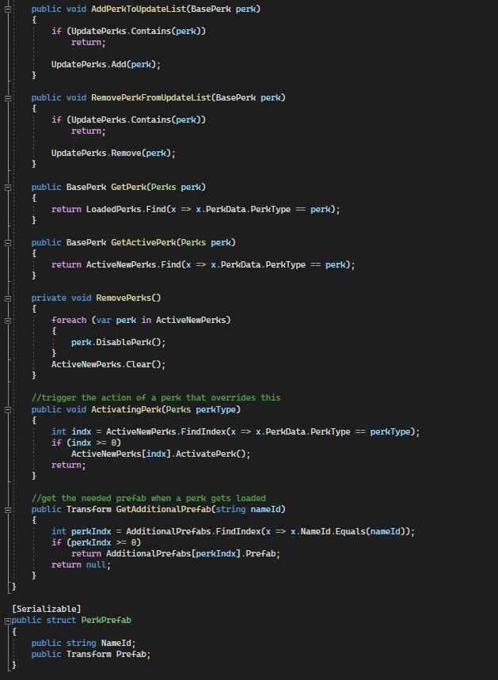
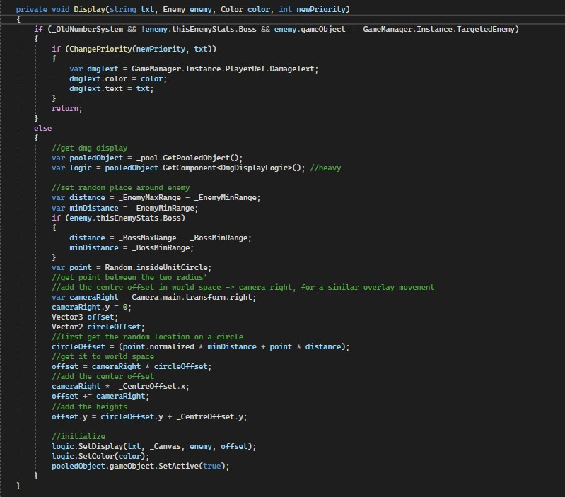
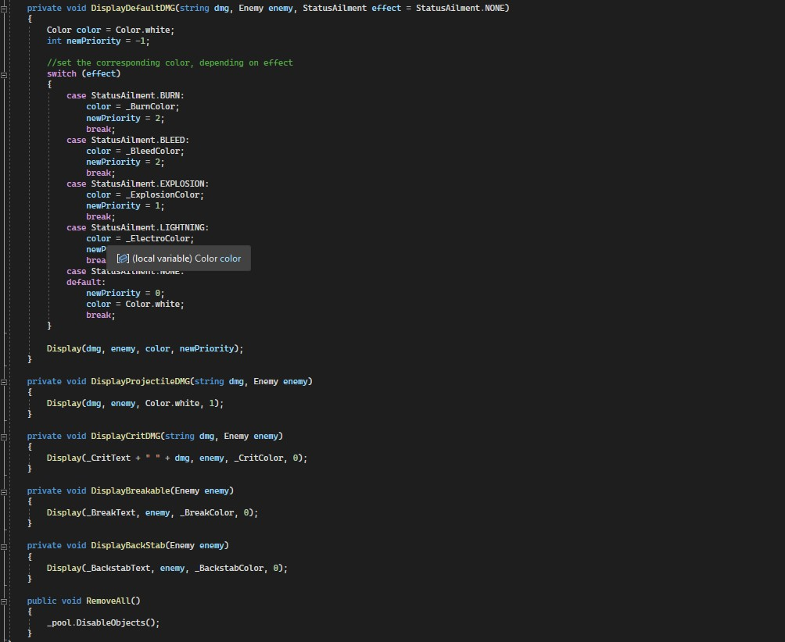
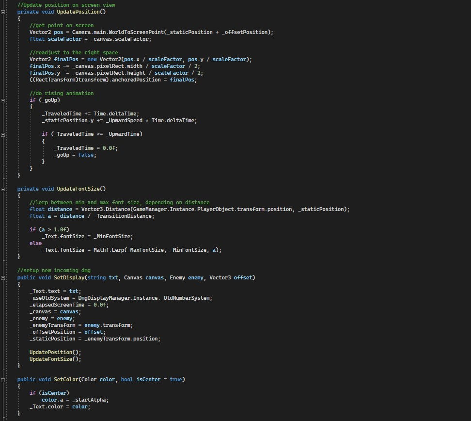
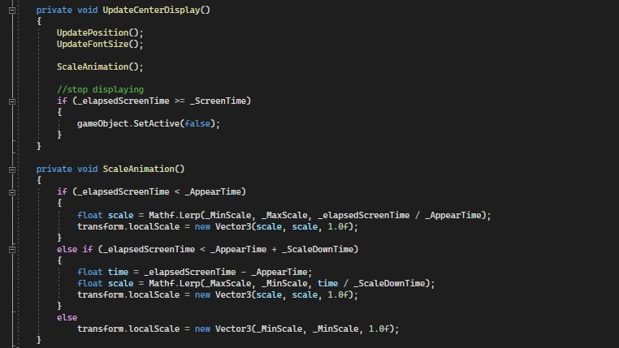

The project I worked on when I did my internship at TruePlayers
2 of the tasks I completed I was allowed to show here
Perk Manager
When I started, they had all logic that the perks needed in almost entirely one file. There weren't that many perks but it is not managable when more would be added.
So I asked if I could try my hands on a better way, it was already marked as things that had to be done, but didn't yet decided when it would need to get changed.
Perks can increase stats, but could also do things (throwing knifes). I decided that perks all would be derived from a base class.
Something that also had to be concidered was the fact that like "Throwing Knifes", have object that needed to be loaded. Ofcourse object pooling had to be done. Perks also could be upgraded when you select the perk multiple times. A way I decided to do this was to let the "Perk Manager" create each perk and keep it in a list. And an object pooling would be created in the constructor. All the intensive operation would be done when the game gets launched. When the perk would be enabled it would be added to a list that is used to know which perks need to be updated. And also gets its amount increased.


Perks can increase stats, but could also do things (throwing knifes). I decided that perks all would be derived from a base class.
Something that also had to be concidered was the fact that like "Throwing Knifes", have object that needed to be loaded. Ofcourse object pooling had to be done. Perks also could be upgraded when you select the perk multiple times. A way I decided to do this was to let the "Perk Manager" create each perk and keep it in a list. And an object pooling would be created in the constructor. All the intensive operation would be done when the game gets launched. When the perk would be enabled it would be added to a list that is used to know which perks need to be updated. And also gets its amount increased.
Damage display
Originally they wanted to have health bars with a damage display similar to the one that is used in Elden Ring. I did ask if it would be better to have damage being displayed on screen around the enemy instead of having it above the healthbar.
Although they really did want the damage being displayed above the health bar. I was allowed to do some research what other games do.
I presented them the research I did, where I noticed that a lot of games to the same by displaying damage around the enemy on screen. I was allowed to work on my idea, but also make sure it is possible to switch to the Elden Ring way. They let their Discord community test both and give their opinion.
It was well received by the discord community.

This was at the end of my internship and I would have wanted to get bit more time on it. Because I made the object pooler and it only retrieves GameObject I could only think about using GetComponent. Which is the one thing I really don't like about the code.

I presented them the research I did, where I noticed that a lot of games to the same by displaying damage around the enemy on screen. I was allowed to work on my idea, but also make sure it is possible to switch to the Elden Ring way. They let their Discord community test both and give their opinion.
It was well received by the discord community.
This was at the end of my internship and I would have wanted to get bit more time on it. Because I made the object pooler and it only retrieves GameObject I could only think about using GetComponent. Which is the one thing I really don't like about the code.
The text itself has some programmed animation, which should have been in the FixedUpdate() instead of the normal Update().
When the text appears it decreases in side until a fixed amount of time and rises up for a fixed amount of time. The font changes size depending how far the player is.


.gif)
When the text appears it decreases in side until a fixed amount of time and rises up for a fixed amount of time. The font changes size depending how far the player is.